Nour a maintenant 8 ans et son Passeport des Sourates porte déjà 5 étoiles ! Cette année, tu vas la suivre pour en gagner 5 de plus, découvrir de nouveaux noms d'Allah, de nouvelles pages de la vie du Prophète ﷺ, et grandir encore un peu plus dans ta foi, in shâ Allah.
⭐ Mon Passeport des Sourates — Année B
0 / 5 étoiles
Clique sur une étoile dès que tu sais réciter la sourate par cœur — avec les 5 de l'Année A, tu arriveras à 10 ! Ta progression est sauvegardée sur cet appareil.
Nour, qui a maintenant 8 ans, retrouve son passeport de l'Année A : 5 étoiles brillent déjà dessus. « Maîtresse, il reste des pages vides ! » dit-elle. « Oui, dit la maîtresse, cette année on va en remplir 5 de plus. La première s'appelle Al-Kawthar. »
La sourate commence ainsi : « Certes, Nous t'avons accordé Al-Kawthar », ce qui signifie qu'Allah a offert au Prophète ﷺ un fleuve du Paradis appelé Al-Kawthar. Ses eaux sont plus blanches que le lait et plus douces que le miel ! En réponse à ce cadeau, la sourate demande deux choses : prier et être généreux.
Allah comble Son Prophète ﷺ — et nous aussi — de bienfaits, même sans qu'on les Lui demande.
✨ Spiritualité
Face à un beau cadeau reçu, la vraie réponse est de se tourner vers Allah par la prière, pas de l'oublier.
🌤️ Au quotidien
Je remercie Allah et je partage ce qu'Il m'a donné, comme la sourate le demande.
Activité : ma 6ème étoile du passeport
Écoute bien la récitation de la sourate avec la classe. Une fois que tu la reconnais, tu pourras tamponner l'étoile Al-Kawthar, la première des 5 nouvelles de l'Année B !
Je m'exerce
1. Qu'est-ce qu'Al-Kawthar ?
Réponse : Un fleuve du Paradis offert par Allah au Prophète ﷺ.
2. Que demande la sourate en réponse à ce cadeau ?
Réponse : Prier et être généreux.
À retenir
« Allah a offert à Son Prophète ﷺ le fleuve Al-Kawthar : je Lui réponds par la prière et le partage. »
Vocabulaire
Al-Kawthar : Un fleuve du Paradis.
Chapitre 2 · Aqîda🕌 Croyance
As-Samî', Al-Basîrالسَّمِيعُ الْبَصِيرُ
Ce que je vais apprendre
Apprendre deux nouveaux noms d'Allah : As-Samî' et Al-Basîr.
Comprendre qu'Allah voit et entend tout.
L'histoire de Nour
Nour chuchote un secret à l'oreille de sa sœur, tout bas, dans le noir. « Est-ce qu'Allah m'a entendue quand même ? » demande-t-elle ensuite à sa maîtresse.
La maîtresse lui explique qu'Allah est As-Samî' (Celui qui entend tout). Il entend le moindre murmure, même le plus silencieux. Allah est aussi Al-Basîr (Celui qui voit tout) : Il voit tout, même dans l'obscurité totale.
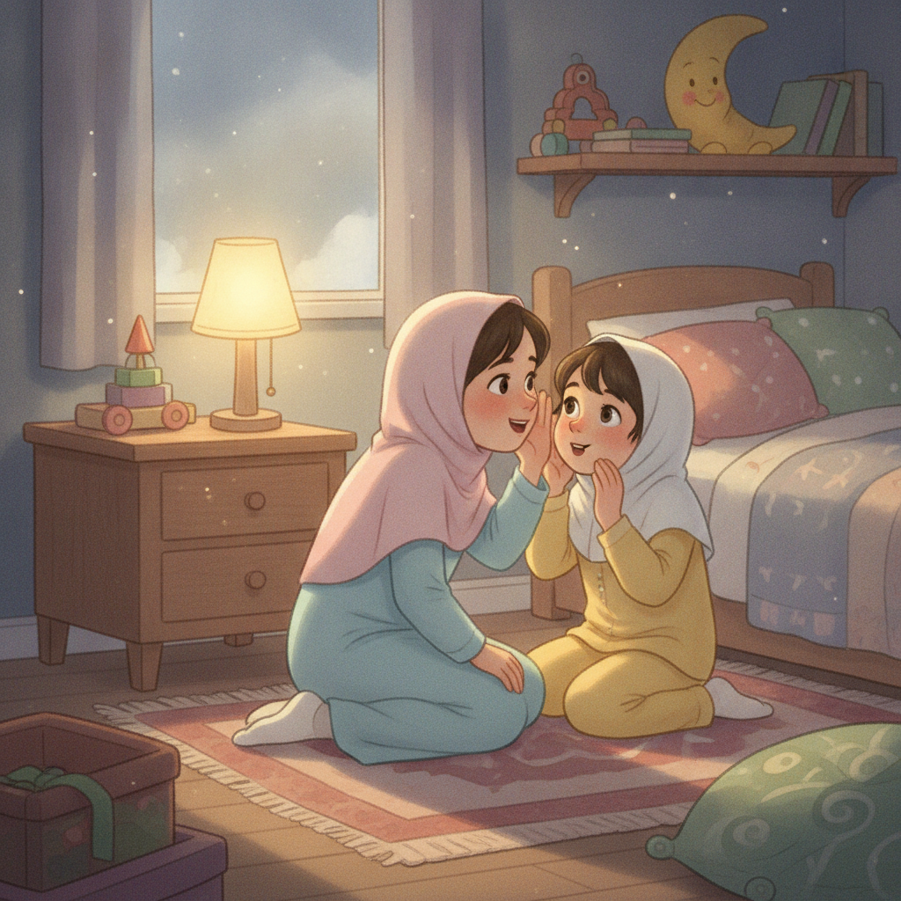
Ce que dit le Coran
إِنَّ اللَّهَ سَمِيعٌ بَصِيرٌ
Inna-Llâha samî'un basîr
« Certes Allah est Audient et Clairvoyant »
Sourate Luqmân (31), verset 28 (extrait) — trad. M. Hamidullah
Activité : le chuchotement
Chuchote un mot très doux à l'oreille de ton camarade à l'autre bout de la salle. Même sans micro, il y a Quelqu'un qui entend absolument tout, toujours.
Je m'exerce
1. Que signifie « As-Samî' » ?
Réponse : Celui qui entend tout.
2. Allah peut-Il nous voir dans le noir ?
Réponse : Oui, car Il est Al-Basîr, Celui qui voit tout.
À retenir
« Allah entend tout ce que je dis, et voit tout ce que je fais. »
Vocabulaire
As-Samî' : Celui qui entend tout.
Al-Basîr : Celui qui voit tout.
Chapitre 3 · Fiqh🕋 Pratique
La Zakât expliquée aux enfantsالزَّكَاةُ
Ce que je vais apprendre
Comprendre ce qu'est la Zakât, un des 5 piliers de l'Islam.
Apprendre à partager avec ceux qui en ont besoin.
L'histoire de Nour
Nour compte ses économies dans une tirelire. « Papa, quand je serai grande, je devrai donner une partie de mon argent ? » Son père sourit : « Oui, ma chérie, c'est l'un des 5 piliers, tu te souviens ? La Zakât. »
La Zakât est l'aumône obligatoire : chaque année, celui qui possède suffisamment de biens en donne une petite part aux personnes qui en ont besoin. C'est un pilier qui purifie les biens.
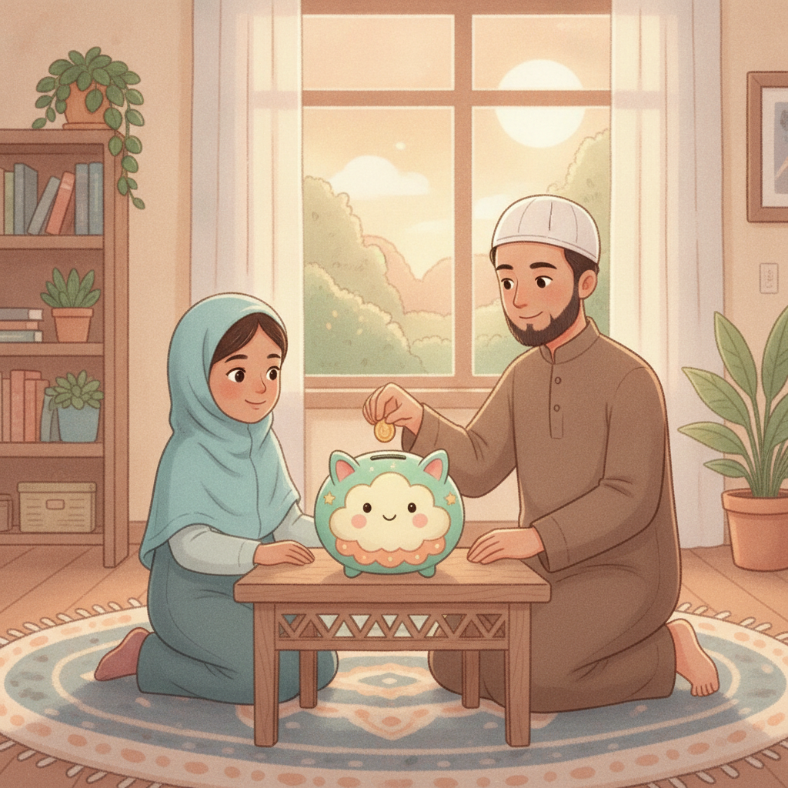
Ce que dit le Coran
وَأَقِيمُوا الصَّلَاةَ وَآتُوا الزَّكَاةَ
Wa aqîmu-s-salâta wa âtu-z-zakâh
« …accomplissez la prière et acquittez l'aumône. Et tout ce que vous avancez de bien pour vous-mêmes, vous le retrouverez auprès d'Allah… »
Sourate Al-Baqara (2), verset 110 (extrait) — trad. M. Hamidullah
Activité : la tirelire de la classe
Une tirelire collective est remplie sur plusieurs semaines. En fin de semestre, la classe choisira ensemble une cause à qui remettre le contenu.
Je m'exerce
1. Qu'est-ce que la Zakât ?
Réponse : L'aumône obligatoire.
2. À qui la donne-t-on ?
Réponse : Aux personnes qui en ont besoin.
À retenir
« Ce que je possède n'est pas qu'à moi : je partage ce qu'Allah m'a donné. »
Vocabulaire
Az-Zakât : L'aumône obligatoire.
Chapitre 4 · Sîra🐫 Histoire
Le voyage en Syrie, Bahîraرِحْلَةُ الشَّامِ وَبَحِيرَى
570Naissance
~5 ansChez Halîma
12 ansVoyage en Syrie
25 ansMariage avec Khadîja
40 ansPremière Révélation
Ce que je vais apprendre
Découvrir le voyage du jeune Prophète ﷺ en Syrie.
Connaître la rencontre avec le moine Bahîra.
L'histoire de Nour
Nour demande : « Le Prophète ﷺ a-t-il beaucoup voyagé quand il était enfant ? » « Oui, dit la maîtresse, et une fois, un vieux moine l'a reconnu rien qu'en le regardant. »
Vers l'âge de 12 ans, Mouhammad ﷺ accompagne son oncle Abû Tâlib dans une caravane commerciale vers la Syrie. En chemin, un moine nommé Bahîra reconnaît en lui des signes annonçant qu'il deviendrait un grand Prophète, et conseille à Abû Tâlib de le protéger.
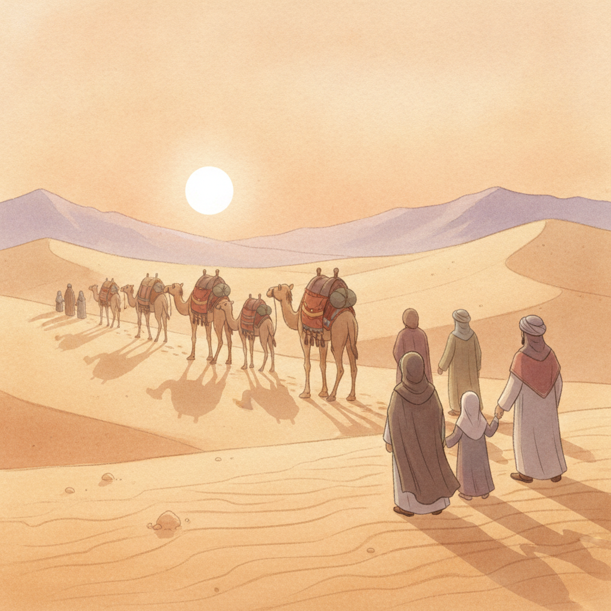
Activité : la carte du voyage
Sur la carte de la classe, trace avec un bout de laine le chemin de La Mecque jusqu'en Syrie, et place l'étiquette « Bahîra » à l'endroit de la rencontre.
Je m'exerce
1. Avec qui le jeune Mouhammad ﷺ voyage-t-il ?
Réponse : Son oncle Abû Tâlib.
2. Qui reconnaît des signes particuliers chez lui ?
Réponse : Le moine Bahîra.
À retenir
« Même enfant, mon Prophète ﷺ portait déjà en lui des signes que d'autres ont su reconnaître. »
Vocabulaire
Syrie : Le pays où se rendait la caravane.
Chapitre 5 · Akhlâq💛 Savoir-être
Le partage et la générositéالْمُشَارَكَةُ وَالْكَرَمُ
Ce que je vais apprendre
Comprendre que la générosité ne concerne pas que l'argent.
Apprendre la valeur du partage (Karam).
L'histoire de Nour
Nour a deux gâteaux dans son sac. Son voisin de table n'en a pas. Elle hésite un instant… puis lui en tend un. « Pourquoi as-tu fait ça ? » demande la maîtresse. « Parce que ça me rend heureuse », répond Nour.
La générosité (Karam) est une qualité aimée d'Allah. Elle ne se limite pas à l'argent : partager son goûter, prêter un jouet, donner du temps à quelqu'un — tout cela est une forme de générosité.
كَرَمٌ
Karam
La générosité
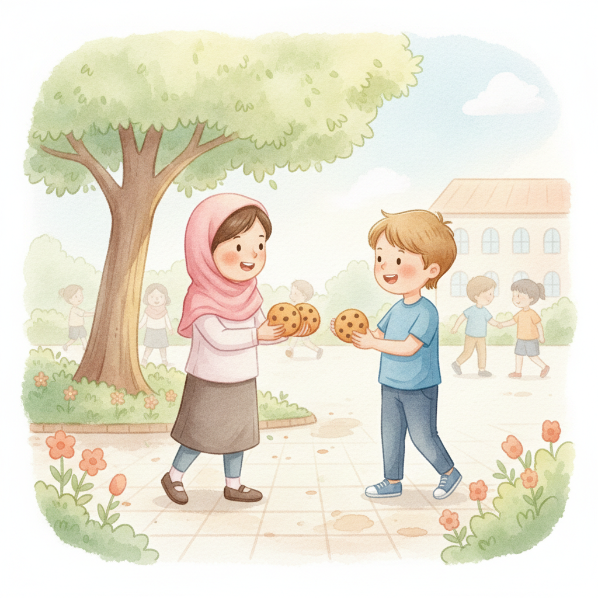
Activité : la chaîne du partage
Chaque fois que tu partages quelque chose cette semaine, accroche un maillon en papier sur la grande frise de la classe !
Je m'exerce
1. Faut-il forcément de l'argent pour être généreux ?
Réponse : Non.
2. Cite un exemple de partage à l'école.
Réponse : Partager son goûter, prêter un jouet.
À retenir
« Partager ce que j'ai me rend heureux, et rend Allah content de moi. »
Vocabulaire
Karam : La générosité.
Chapitre 6 · Adhkâr🚪 Invocations
Entrer et sortir de la maisonدُخُولُ الْبَيْتِ وَالْخُرُوجُ مِنْهُ
Ce que je vais apprendre
L'invocation à dire en sortant de la maison.
Savoir qu'il faut saluer en entrant.
L'histoire de Nour
Chaque matin, avant de partir à l'école, Nour a pris l'habitude de dire une petite phrase sur le pas de la porte. « C'est comme un bouclier avant de sortir dans le monde », lui a expliqué sa maman.
En sortant de la maison, on dit une invocation qui place sa confiance en Allah. Et en y entrant, on salue les personnes présentes.
On colle une belle affiche près de la porte de la classe. Entraîne-toi à dire l'invocation à voix basse en sortant pour la récréation !
Je m'exerce
1. Que veut dire « tawakkaltu » ?
Réponse : Je place ma confiance.
2. Que fait-on en entrant chez soi ?
Réponse : On salue.
À retenir
« Avant de sortir, je place ma confiance en Allah. »
Vocabulaire
Tawakkaltu : J'ai placé ma confiance (en Allah).
Chapitre 7 · Coran📗 Le Coran
Sourate Al-'Asr
Ce que je vais apprendre
Découvrir la 7ème sourate du passeport.
Comprendre que le temps est très précieux.
L'histoire de Nour
« Maîtresse, pourquoi le temps passe si vite ? » demande Nour en regardant l'horloge de la classe. « C'est une bonne question, dit la maîtresse. Il existe une sourate entière sur le temps. »
Al-'Asr (« Le Temps ») rappelle que le temps qui passe est précieux. La personne qui réussit est celle qui croit, agit bien, dit la vérité et reste patiente.
Wa-l-'asr. Inna-l-insâna lafî khusr. Illa-lladhîna âmanû wa 'amilu-s-sâlihâti wa tawâsaw bi-l-haqqi wa tawâsaw bi-s-sabr.
« Par le Temps ! L'homme est certes, en perdition, sauf ceux qui croient et accomplissent les bonnes œuvres, s'enjoignent mutuellement la vérité et s'enjoignent mutuellement l'endurance. »
Allah jure par le temps pour nous montrer à quel point il est précieux et compté.
✨ Spiritualité
Réussir aux yeux d'Allah, c'est croire, bien agir, dire la vérité et rester patient — pas juste « avoir de la chance ».
🌤️ Au quotidien
Avant de perdre mon temps, je me demande ce que je pourrais faire de bien avec.
Activité : ma 7ème étoile du passeport
Un petit sablier passe de main en main : cite vite une bonne action que tu pourrais faire aujourd'hui avant que le sable ne s'écoule !
Je m'exerce
1. De quoi parle la sourate Al-'Asr ?
Réponse : Du temps.
2. Que doit-on se recommander mutuellement ?
Réponse : La vérité et la patience.
À retenir
« Le temps passe : je veux le remplir de bonnes actions. »
Vocabulaire
Al-'Asr : Le Temps.
Chapitre 8 · Aqîda🕌 Croyance
Le Jour Dernier
Ce que je vais apprendre
Comprendre ce qu'est le Jour Dernier, un pilier de la foi.
Savoir qu'Allah n'oublie aucune bonne action.
L'histoire de Nour
Nour se souvient de l'Année A : le Jour Dernier faisait partie des 6 piliers de la foi. « Mais c'est quoi exactement, ce jour ? » demande-t-elle.
Le Jour Dernier est le jour où Allah jugera chaque personne selon ses actions. C'est un jour de justice parfaite : rien n'est oublié, même une toute petite bonne action !
Il nous reste deux piliers de la foi à découvrir plus tard : les Livres saints et le Qadar. Chaque année, tu avances un peu plus loin dans ta foi, in shâ Allah.
الْيَوْمُ الْآخِرُ
Al-Yawm al-Âkhir
Le Jour Dernier
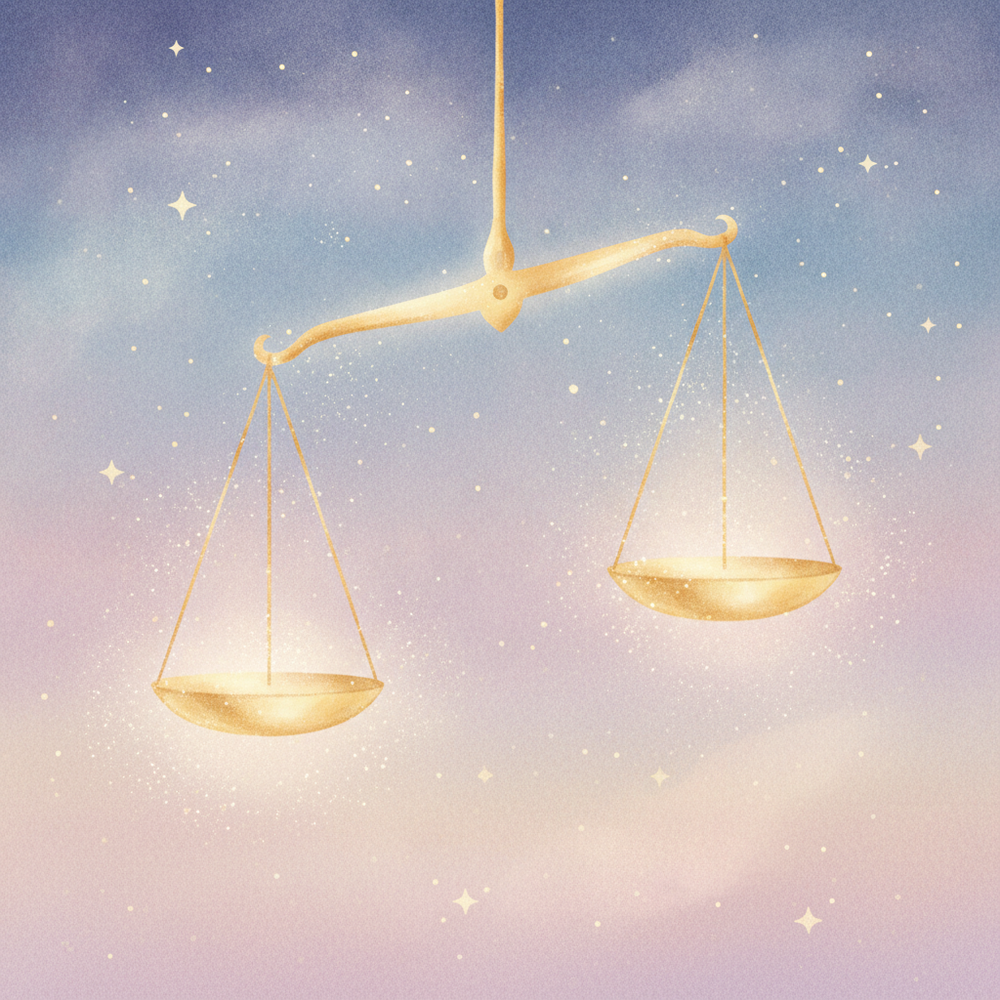
Activité : la balance des actions
Avec une balance en carton, plaçons nos étiquettes « bonnes actions ». Découvrons ensemble que chaque petite action a un poids important !
Je m'exerce
1. Que se passe-t-il le Jour Dernier ?
Réponse : Allah juge chacun selon ses actions.
2. Une petite bonne action peut-elle être oubliée ?
Réponse : Non, rien n'est oublié.
À retenir
« Allah voit et garde en mémoire tout ce que je fais, même les petites choses. »
Vocabulaire
Al-Yawm al-Âkhir : Le Jour Dernier.
Chapitre 9 · Fiqh🌙 Pratique
Le jeûne (Sawm)
Ce que je vais apprendre
Comprendre ce qu'est le jeûne du mois de Ramadan.
Apprendre les leçons de patience et d'empathie.
L'histoire de Nour
Nour a vu ses parents ne rien manger ni boire toute une journée pendant le Ramadan. « Vous n'avez pas faim ? » leur a-t-elle demandé, impressionnée.
Le Sawm (jeûne) consiste à ne rien manger ni boire du lever au coucher du soleil, pendant le mois de Ramadan. Il apprend la patience, la maîtrise de soi et à penser à ceux qui ont faim. En tant qu'enfant, tu peux t'entraîner en douceur, par exemple pendant une demi-journée.
« Ô les croyants ! On vous a prescrit le jeûne comme on l'a prescrit à ceux d'avant vous, ainsi atteindrez-vous la piété. »
Sourate Al-Baqara (2), verset 183 — trad. M. Hamidullah
Activité : le calendrier du jeûne
Fabriquons un calendrier de Ramadan avec une case spéciale pour noter une bonne action offerte à quelqu'un qui a faim !
Je m'exerce
1. Pendant quel mois jeûne-t-on ?
Réponse : Ramadan.
2. Du lever à quel moment dure le jeûne ?
Réponse : Du lever au coucher du soleil.
À retenir
« Le jeûne m'apprend la patience et à penser à ceux qui ont moins que moi. »
Vocabulaire
As-Siyâm (Sawm) : Le jeûne.
Ramadân : Le mois du jeûne.
Chapitre 10 · Sîra💍 Histoire
Le mariage avec Khadîja
570Naissance
~5 ansChez Halîma
12 ansVoyage en Syrie
25 ansMariage avec Khadîja
40 ansPremière Révélation
Ce que je vais apprendre
Découvrir l'histoire du mariage du Prophète ﷺ.
Comprendre que l'honnêteté attire la confiance.
L'histoire de Nour
Nour se souvient : « Al-Amîn », le digne de confiance — c'est le surnom qu'on avait donné au Prophète ﷺ enfant. « Est-ce que d'autres personnes lui ont fait confiance plus tard ? » demande-t-elle.
Devenu jeune homme, Mouhammad ﷺ gère les affaires commerciales d'une riche marchande, Khadîja. Il le fait avec tant d'honnêteté qu'elle décide de l'épouser. Khadîja sera un grand soutien toute sa vie, et la première à croire en lui lorsqu'il deviendra Prophète.
خَدِيجَةُ
Khadîja
Khadîja, la première épouse du Prophète ﷺ
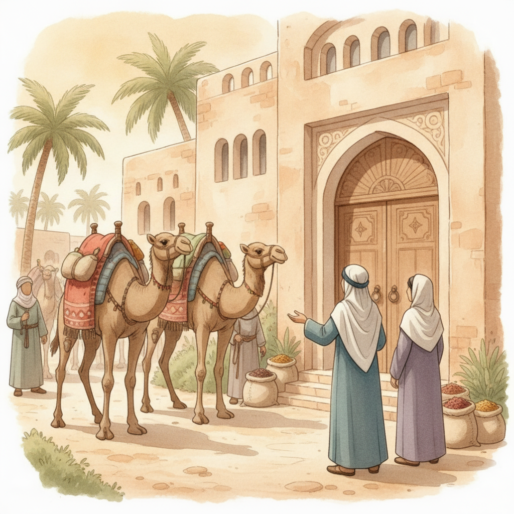
Activité : les qualités de confiance
Écris sur des étiquettes les qualités qui donnent envie de faire confiance à quelqu'un (honnêteté, tenir sa parole…).
Je m'exerce
1. Comment s'appelle la marchande qui l'emploie ?
Réponse : Khadîja.
2. Pourquoi décide-t-elle de l'épouser ?
Réponse : Pour son honnêteté et sa droiture.
À retenir
« La confiance se gagne par l'honnêteté, jour après jour. »
Vocabulaire
Khadîja : La première épouse du Prophète ﷺ.
Chapitre 11 · Coran📗 Le Coran
Sourate An-Nasr
Ce que je vais apprendre
Découvrir la 8ème sourate de mon passeport.
Apprendre à remercier Allah et rester humble quand on gagne.
L'histoire de Nour
« Maîtresse, est-ce qu'Allah aide toujours les croyants à réussir ? » demande Nour. « Il y a une sourate entière qui parle de la victoire, et de ce qu'il faut faire après », répond la maîtresse.
An-Nasr (« Le Secours ») annonce l'arrivée du secours d'Allah et la victoire. Elle demande alors de glorifier Allah, de Le louer, et de Lui demander pardon — même après une grande réussite, on doit rester humble.
Idhâ jâ'a nasru-Llâhi wa-l-fath. Wa ra'ayta-n-nâsa yadkhulûna fî dîni-Llâhi afwâjâ. Fa sabbih bi-hamdi Rabbika wa-staghfirh, innahu kâna tawwâbâ.
« Lorsque vient le secours d'Allah ainsi que la victoire, et que tu vois les gens entrer en foule dans la religion d'Allah, alors, par la louange, célèbre la gloire de ton Seigneur et implore Son pardon. Car c'est Lui le grand Accueillant au repentir. »
La victoire et le secours viennent toujours d'Allah, jamais seulement de nos propres forces.
✨ Spiritualité
Même après une grande réussite, je reste humble et je demande pardon à Allah plutôt que de me vanter.
🌤️ Au quotidien
Après un succès (une bonne note, un jeu gagné), je dis « Alhamdulillah » avant de me réjouir.
Activité : ma 8ème étoile du passeport
Discutons tous ensemble : « Comment rester humble quand on a réussi quelque chose ? » Puis ajoute ta nouvelle étoile !
Je m'exerce
1. De quoi parle la sourate An-Nasr ?
Réponse : Du secours d'Allah et de la victoire.
2. Que doit-on faire après une grande réussite ?
Réponse : Glorifier Allah et Lui demander pardon.
À retenir
« Même quand je réussis, je reste humble et je remercie Allah. »
Vocabulaire
An-Nasr : Le Secours.
Chapitre 12 · Aqîda🕌 Croyance
Al-'Alîm, Al-Hakîm
Ce que je vais apprendre
Découvrir deux nouveaux attributs grandioses d'Allah.
Comprendre la Sagesse d'Allah dans toute chose.
L'histoire de Nour
Nour pose une question à laquelle personne ne sait répondre : « Pourquoi le ciel est-il bleu et pas vert ? » « Il y a Quelqu'un qui connaît la réponse à toutes les questions », lui dit sa maîtresse en souriant.
Allah est Al-'Alîm (Celui qui sait tout) : Il connaît chaque chose, visible et cachée. Allah est aussi Al-Hakîm (Le Sage) : tout ce qu'Il fait a une sagesse, même quand on ne la comprend pas tout de suite.
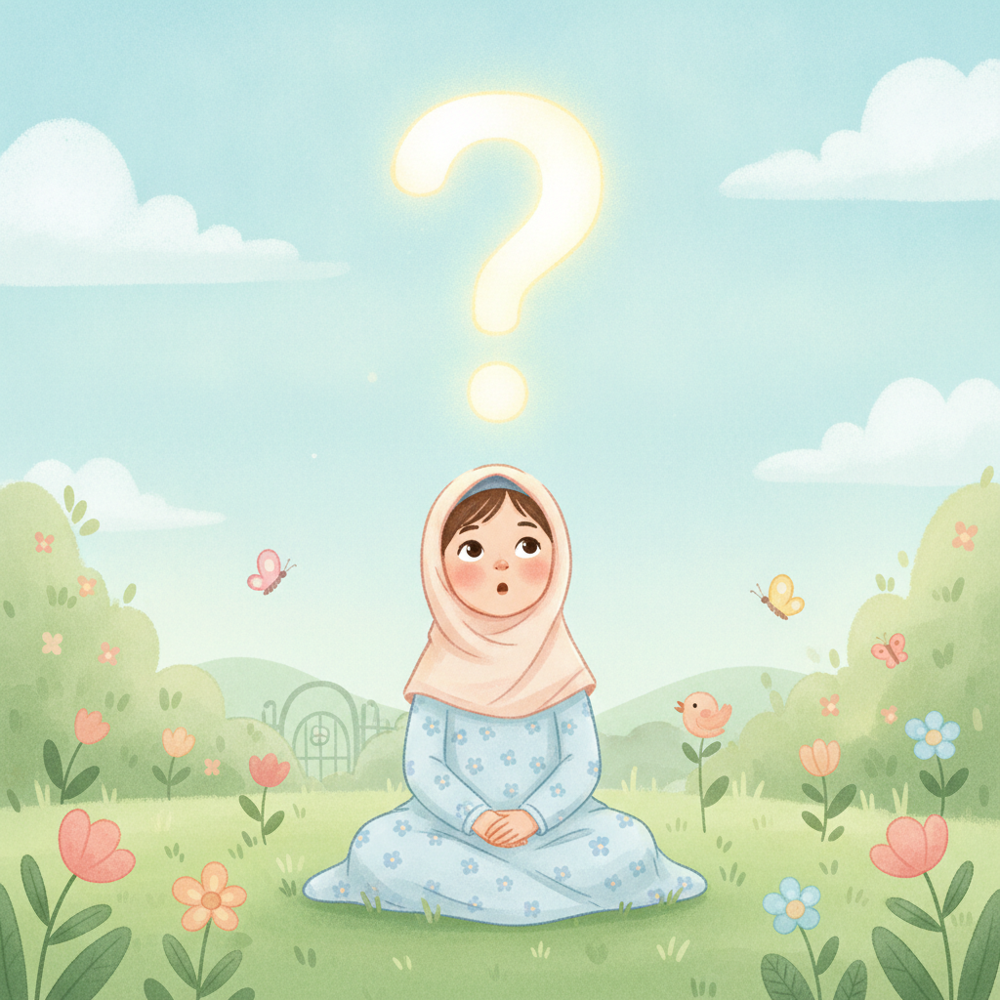
Ce que dit le Coran
إِنَّ رَبَّكَ حَكِيمٌ عَلِيمٌ
Inna Rabbaka hakîmun 'alîm
« Ton Seigneur est Sage et Omniscient »
Sourate Al-An'âm (6), verset 83 (extrait) — trad. M. Hamidullah
Activité : la boîte à questions
Écris une question difficile sur un papier et mets-la dans la boîte. Seul Allah possède toutes les réponses de l'Univers !
Je m'exerce
1. Que signifie « Al-'Alîm » ?
Réponse : Celui qui sait tout.
2. Est-ce grave de ne pas comprendre tout de suite la sagesse d'Allah ?
Réponse : Non, on peut Lui faire totalement confiance.
À retenir
« Allah sait tout, et tout ce qu'Il fait a une sagesse. »
Vocabulaire
Al-'Alîm : Celui qui sait tout.
Al-Hakîm : Le Sage.
Chapitre 13 · Fiqh🕋 Pratique
La prière en détail
Ce que je vais apprendre
Apprendre comment se compose une prière.
Comprendre ce qu'est une « Rak'a ».
L'histoire de Nour
Nour a déjà appris les gestes de la prière l'an dernier : Qiyâm, Rukû', Sujûd, Julûs, Taslîm. « Mais combien de fois on les répète ? » demande-t-elle cette fois.
Chaque prière (Salât) est composée d'un nombre précis de rak'a (unités de prière), qui varie selon le moment de la journée. Une rak'a enchaîne Qiyâm, Rukû', Sujûd (deux fois) et Julûs.
رَكْعَةٌ
Rak'a
Unité de prière
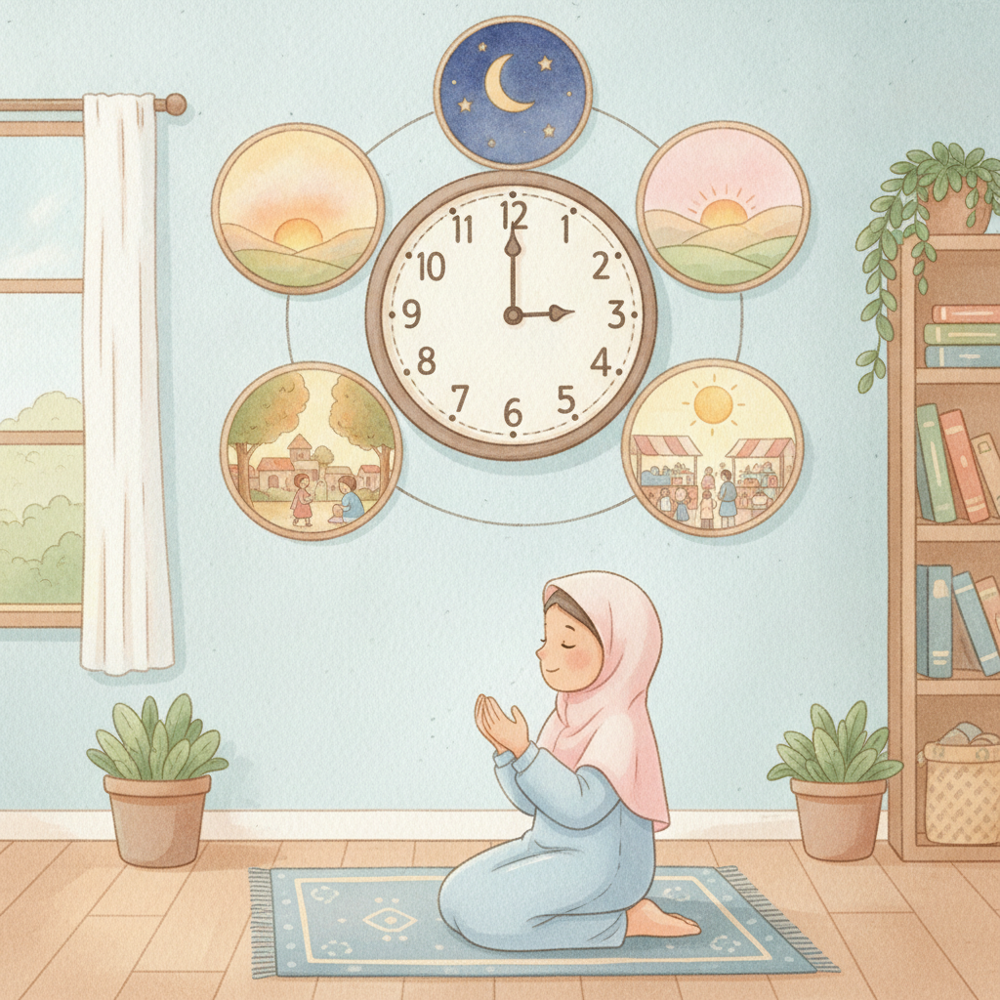
Activité : compter ses rak'a
Jouons avec un jeu de plateau : avance d'une case à chaque rak'a mimée. Arrête-toi à la fin de la prière du moment tirée au sort !
Je m'exerce
1. Comment appelle-t-on une unité de prière ?
Réponse : Une rak'a.
2. Le nombre de rak'a est-il le même à chaque prière ?
Réponse : Non, il varie selon la prière de la journée.
À retenir
« Chaque prière a son nombre de rak'a : je les compte et je me concentre. »
Vocabulaire
Rak'a : Unité de prière.
Chapitre 14 · Fiqh🕋 Pratique
Le Hajj
Ce que je vais apprendre
Découvrir le grand pèlerinage.
Savoir ce que représente la Ka'ba.
L'histoire de Nour
Nour a vu une photo de milliers de personnes habillées en blanc, tournant toutes autour d'un grand cube noir. « C'est quoi cet endroit ? » demande-t-elle, impressionnée.
Le Hajj est le pèlerinage à La Mecque, obligatoire une fois dans la vie pour celui qui en a les moyens. Les pèlerins tournent 7 fois autour de la Ka'ba (le Tawâf), habillés simplement, tous égaux devant Allah.
Construisons ensemble une maquette en carton noir de la Ka'ba. Puis mimez le Tawâf en tournant sept fois autour !
Je m'exerce
1. Où se rend-on pour le Hajj ?
Réponse : À La Mecque, autour de la Ka'ba.
2. Combien de fois tourne-t-on autour de la Ka'ba ?
Réponse : 7 fois (le Tawâf).
À retenir
« Au Hajj, tous les croyants sont égaux devant Allah. »
Vocabulaire
Al-Hajj : Le pèlerinage à La Mecque.
At-Tawâf : Les 7 tours autour de la Ka'ba.
Chapitre 15 · Sîra🌄 Histoire
La première Révélation
570Naissance
~5 ansChez Halîma
12 ansVoyage en Syrie
25 ansMariage avec Khadîja
40 ansPremière Révélation
Ce que je vais apprendre
Découvrir le jour où le Prophète ﷺ a reçu la Révélation de l'ange Jibrîl.
Apprendre le premier mot du Coran descendu du ciel.
L'histoire de Nour
Nour demande : « Comment le Coran est-il arrivé jusqu'à nous, la toute première fois ? » La maîtresse s'assoit et raconte, calmement, le tout premier jour.
À l'âge de 40 ans, pendant le mois de Ramadan, Mouhammad ﷺ aimait aller dans une grotte appelée Hirâ' pour adorer Allah en silence. Une nuit, l'ange Jibrîl lui apparaît et lui dit « Iqra' » (« Lis »). Le Prophète ﷺ répond : « Je ne sais pas lire. » Jibrîl récite alors les tout premiers mots du Coran.
Bouleversé, il rentre chez lui. Son épouse Khadîja le réconforte en lui disant : « N'aie crainte, Allah ne t'infligera jamais d'affront, car tu es bon envers tes proches et tu aides les faibles. » Elle l'emmène ensuite voir Waraqa ibn Nawfal, qui reconnaît en Jibrîl l'ange envoyé aux prophètes d'autrefois.
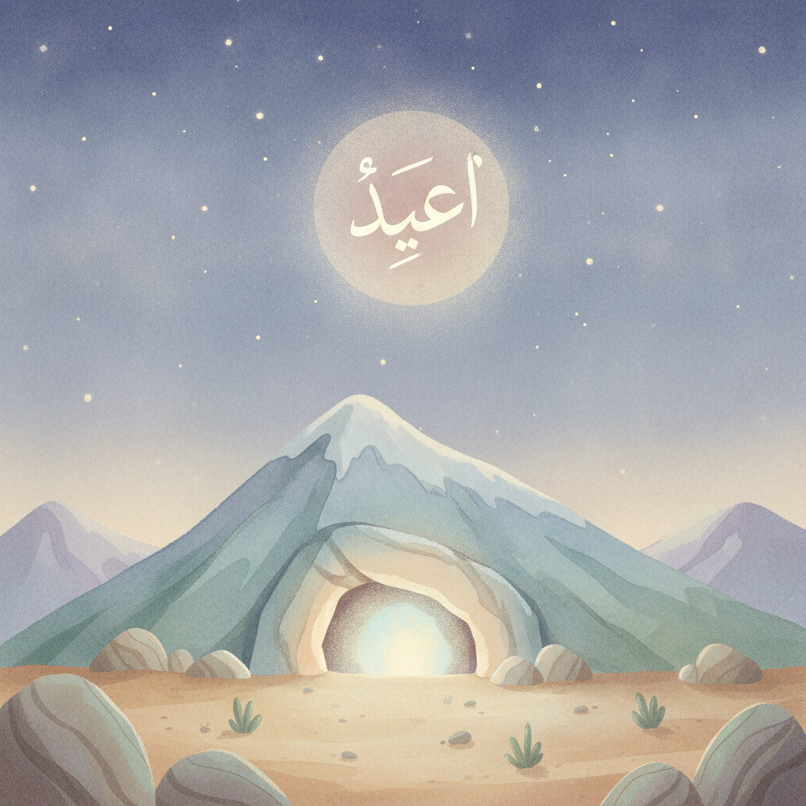
Activité : le premier mot
Sur une belle carte, calligraphie le mot « Iqra' ». Garde-la comme rappel que le Coran a commencé par une invitation à lire et apprendre !
Je m'exerce
1. Comment s'appelle la grotte ?
Réponse : La grotte de Hirâ'.
2. Quel est le premier mot révélé par l'ange Jibrîl ?
Réponse : « Iqra' » (Lis).
À retenir
« Le Coran a commencé par un seul mot : "Lis." »
Vocabulaire
Hirâ' : La grotte de la première Révélation.
Iqra' : Lis.
Chapitre 16 · Prophètes🧱 Récit
Ibrâhîm & Ismâ'îl
Ce que je vais apprendre
Savoir qui a construit la Ka'ba.
Comprendre que l'on ne doit adorer qu'Allah seul.
L'histoire de Nour
Nour se souvient de la maquette de la Ka'ba construite en classe. « Mais qui l'a construite, la toute première fois ? » demande-t-elle.
Le prophète Ibrâhîm ('alayhi as-salâm) a refusé d'adorer des idoles pour n'adorer qu'Allah Seul. Sur l'ordre d'Allah, Ibrâhîm et son fils Ismâ'îl élèvent les fondations de la Ka'ba à La Mecque.
Wa idh yarfa'u Ibrâhîmu-l-qawâ'ida mina-l-bayti wa Ismâ'îl, Rabbanâ taqabbal minnâ
« Et quand Abraham et Ismaël élevaient les assises de la Maison : "Ô notre Seigneur ! Accepte ceci de notre part ! Car c'est Toi l'Audient, l'Omniscient." »
Sourate Al-Baqara (2), verset 127 — trad. M. Hamidullah
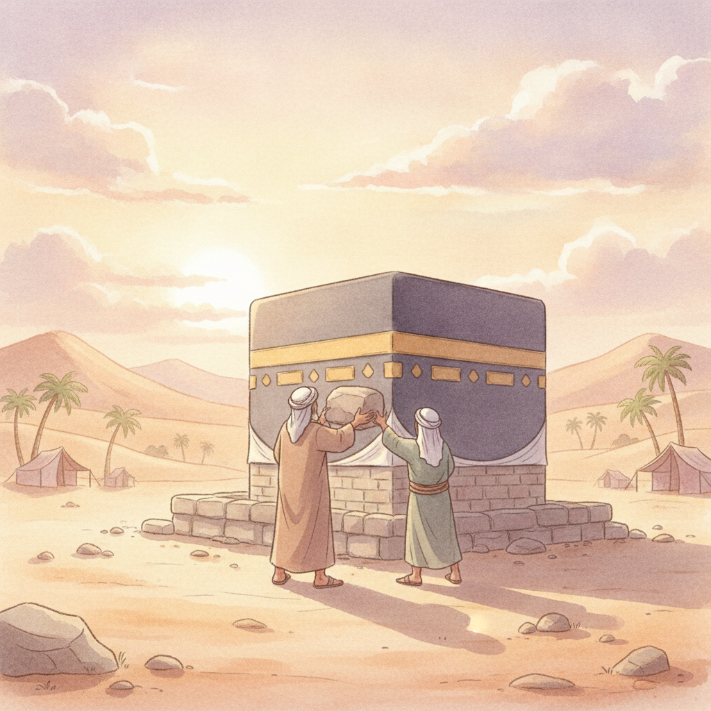
Activité : les bâtisseurs
En binômes, empilez des cubes en carton pour « construire » votre Ka'ba miniature, en répétant « Rabbanâ taqabbal minnâ » à la pose de chaque cube !
Je m'exerce
1. Qui construit la Ka'ba avec son fils ?
Réponse : Le prophète Ibrâhîm.
2. Comment s'appelle son fils ?
Réponse : Ismâ'îl.
À retenir
« Comme Ibrâhîm, je n'adore qu'Allah seul, et je bâtis ma foi sur cette certitude. »
Vocabulaire
Ibrâhîm : Le prophète Abraham.
Ismâ'îl : Le prophète Ismaël.
Chapitre 17 · Akhlâq💛 Savoir-être
Respecter les aînés
Ce que je vais apprendre
Apprendre le respect envers les plus grands.
Connaître les bons gestes du quotidien.
L'histoire de Nour
Un grand-père entre dans la classe. Sans qu'on le lui dise, Nour se lève et lui propose sa chaise. « Comme c'est gentil ! » dit-il, touché.
Respecter ses enseignants et les personnes plus âgées est très important en Islam : on les écoute, on ne leur coupe pas la parole, on les aide, et on leur laisse la priorité.
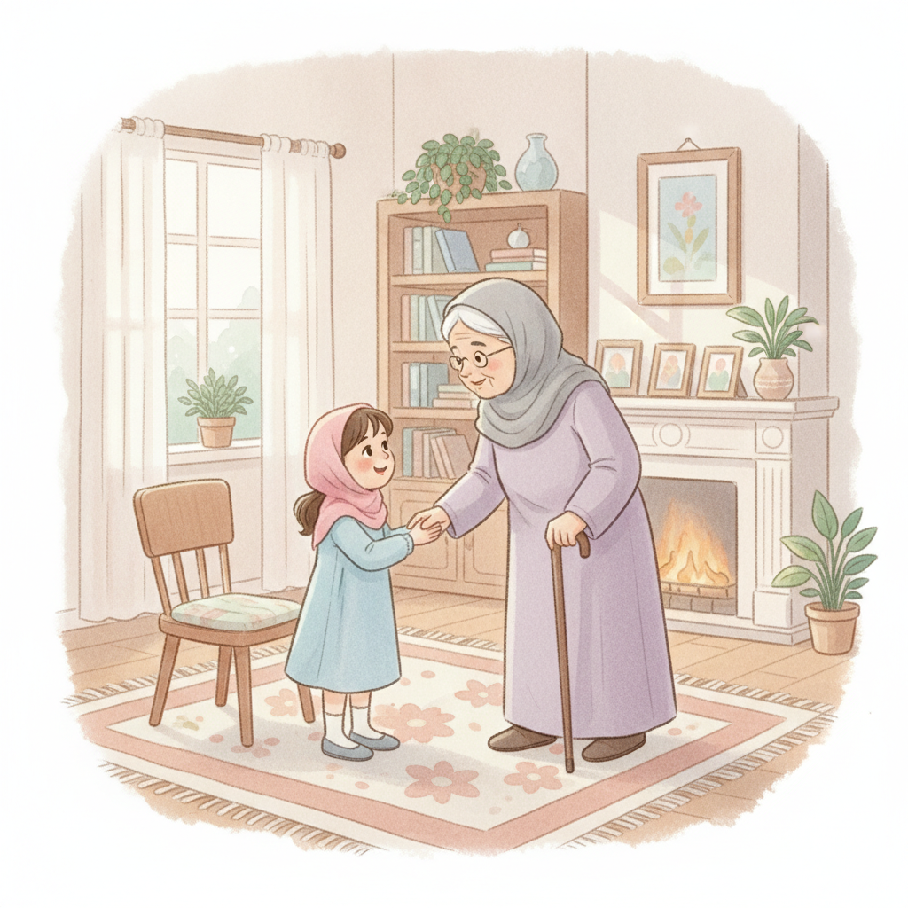
Le savais-tu ?
Le Prophète ﷺ a dit : « Ne fait pas partie des nôtres celui qui n'est pas miséricordieux envers nos plus jeunes et ne respecte pas le droit de nos aînés. » (Abû Dâwûd, n°4943)
Activité : le petit geste du jour
Choisis un geste de respect à offrir dans la semaine (céder sa place, aider à porter un sac) et raconte-le à la classe la semaine suivante !
Je m'exerce
1. Cite un geste de respect envers un aîné.
Réponse : Céder sa place, écouter, aider.
2. Doit-on couper la parole d'un enseignant ?
Réponse : Non.
À retenir
« Je respecte ceux qui m'enseignent et ceux qui sont plus âgés que moi. »
Vocabulaire
Adab : Le bon comportement.
Chapitre 18 · Akhlâq💛 Savoir-être
La sincérité (Ikhlâs)
Ce que je vais apprendre
Comprendre que l'intention cachée est la plus importante.
Savoir faire de bonnes actions seulement pour Allah.
L'histoire de Nour
Nour range sa chambre sans que personne ne le lui demande. « Pourquoi tu ne l'as pas dit à maman ? » demande son frère. « Je l'ai fait pour Allah, pas pour qu'on me félicite », répond-elle.
L'Ikhlâs (sincérité) signifie faire une bonne action pour plaire à Allah, et non pour être vu. C'est l'intention du cœur qui donne sa vraie valeur à une action.
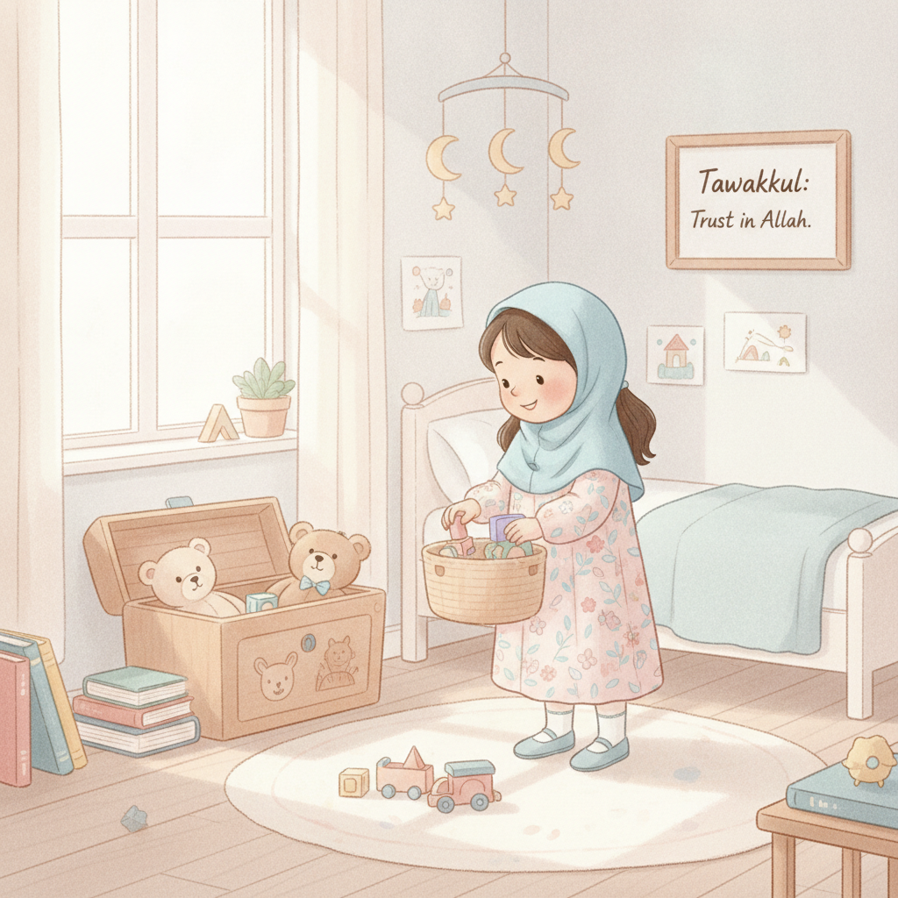
Un hadith célèbre
إِنَّمَا الْأَعْمَالُ بِالنِّيَّاتِ
Innama-l-a'mâlu bi-n-niyyât
« Les actions ne valent que par les intentions »
Sahîh al-Bukhârî, hadith n°1
Activité : la bonne action secrète
Fais une bonne action sans le dire à personne dans la semaine. En classe, on discutera de ce que cela change de la garder secrète !
Je m'exerce
1. Que signifie « Ikhlâs » ?
Réponse : La sincérité de l'intention.
2. Pour qui doit-on faire une bonne action ?
Réponse : Pour Allah, pas pour être vu.
À retenir
« Je fais le bien pour Allah, même quand personne ne me regarde. »
Vocabulaire
Al-Ikhlâs : La sincérité de l'intention.
Chapitre 19 · Adhkâr🚗 Invocations
Invocation du voyage
Ce que je vais apprendre
Mémoriser la belle phrase à dire avant de voyager.
Remercier Allah pour les moyens de transport.
L'histoire de Nour
Nour part en voyage. Avant de démarrer la voiture, son père récite une petite invocation. « On la dit à chaque fois qu'on part loin », lui explique-t-il.
Avant un voyage, on place sa confiance en Allah et on Lui demande de rendre le chemin facile et le retour sûr.
Subhâna-lladhî sakhkhara lanâ hâdhâ wa mâ kunnâ lahu muqrinîn, wa innâ ilâ Rabbinâ lamunqalibûn
« Gloire à Celui qui nous a soumis tout cela alors que nous n'étions pas capables de les dominer. Et c'est vers notre Seigneur que nous retournerons. »
Sourate Az-Zukhruf (43), versets 13-14 — trad. M. Hamidullah
Activité : la carte du voyageur
Fabrique une petite carte plastifiée à garder dans le sac ou la voiture, avec l'invocation du voyage écrite dessus !
Je m'exerce
1. Quand récite-t-on cette invocation ?
Réponse : Avant de partir en voyage.
2. Que demande-t-on à Allah ?
Réponse : Un chemin facile et un retour sûr.
À retenir
« Avant de voyager, je remercie Allah et je Lui confie mon chemin. »
Vocabulaire
Safar : Le voyage.
Chapitre 20 · Coran📗 Le Coran
Al-Kâfirûn & Quraysh
Ce que je vais apprendre
Découvrir mes 9ème et 10ème étoiles du passeport.
Apprendre la tolérance et la gratitude.
L'histoire de Nour
Nour ouvre son passeport : il ne reste que 2 pages vides. « Les 2 dernières sourates de l'année ! » s'exclame-t-elle, très fière.
Al-Kâfirûn (« Les Mécréants ») enseigne que chacun est libre de croire ou non. Le musulman n'adore qu'Allah, sans forcer personne. Quraysh rappelle que la tribu de La Mecque voyageait en sécurité grâce à Allah ; elle devait donc L'adorer pour les avoir nourris et protégés.
Qul yâ ayyuha-l-kâfirûn. Lâ a'budu mâ ta'budûn. Wa lâ antum 'âbidûna mâ a'bud. Wa lâ ana 'âbidun mâ 'abadtum. Wa lâ antum 'âbidûna mâ a'bud. Lakum dînukum wa liya dîn.
« Dis : "Ô vous les infidèles ! Je n'adore pas ce que vous adorez. Et vous n'êtes pas adorateurs de ce que j'adore. Je ne suis pas adorateur de ce que vous adorez. Et vous n'êtes pas adorateurs de ce que j'adore. À vous votre religion, et à moi ma religion." »
Li-îlâfi Quraysh. Îlâfihim rihlata-sh-shitâ'i wa-s-sayf. Fal-ya'budû Rabba hâdha-l-bayt. Alladhî at'amahum min jû'in wa âmanahum min khawf.
« À cause de l'habitude des Quraysh, de leur habitude [concernant] les voyages d'hiver et d'été, qu'ils adorent donc le Seigneur de cette Maison [la Ka'ba], qui les a nourris contre la faim et rassurés de la crainte. »
Je n'adore qu'Allah Seul, sans jamais forcer quelqu'un d'autre à croire comme moi.
✨ Spiritualité
Ma foi est une conviction du cœur, pas quelque chose qu'on impose de force aux autres.
🌤️ Au quotidien
Je respecte les personnes qui ne croient pas comme moi, sans me moquer ni me fâcher.
3 idées essentielles — Quraysh
🤍 Foi
Allah protège et nourrit, même quand on ne pense pas toujours à Le remercier.
✨ Spiritualité
Ma sécurité et ma nourriture de chaque jour sont des cadeaux d'Allah, pas des choses qui vont de soi.
🌤️ Au quotidien
Avant de manger ou en rentrant chez moi en sécurité, je pense à dire merci à Allah.
Activité : mes 2 dernières étoiles
Grande cérémonie en classe ! Récitons ensemble et tamponne tes 2 dernières étoiles pour compléter ton passeport à 10 sourates !
Je m'exerce
1. Que veut dire « Al-Kâfirûn » ?
Réponse : Les mécréants.
2. Combien de sourates compte le passeport à la fin de l'Année B ?
Réponse : 10 sourates.
Défi de fin d'année
Récite de mémoire, devant ta famille, les 10 sourates de ton passeport, dans l'ordre où tu les as apprises depuis l'Année A. Demande à un adulte de te signer un joli diplôme !
À retenir
« Je n'adore qu'Allah, librement, et je Le remercie pour tout ce qu'Il me donne. »
Vocabulaire
Al-Kâfirûn : Les mécréants.
Quraysh : La tribu de La Mecque.
📚 Sources des traductions
Les versets coraniques cités dans ce manuel sont traduits d'après Muhammad Hamidullah, traduction de référence en langue française (consultée via quran.com).
Les hadiths sont vérifiés d'après les recueils authentiques : Sahîh al-Bukhârî, Sahîh Muslim, Sunan Abî Dâwûd et Jâmi' at-Tirmidhî (numérotation sunnah.com).